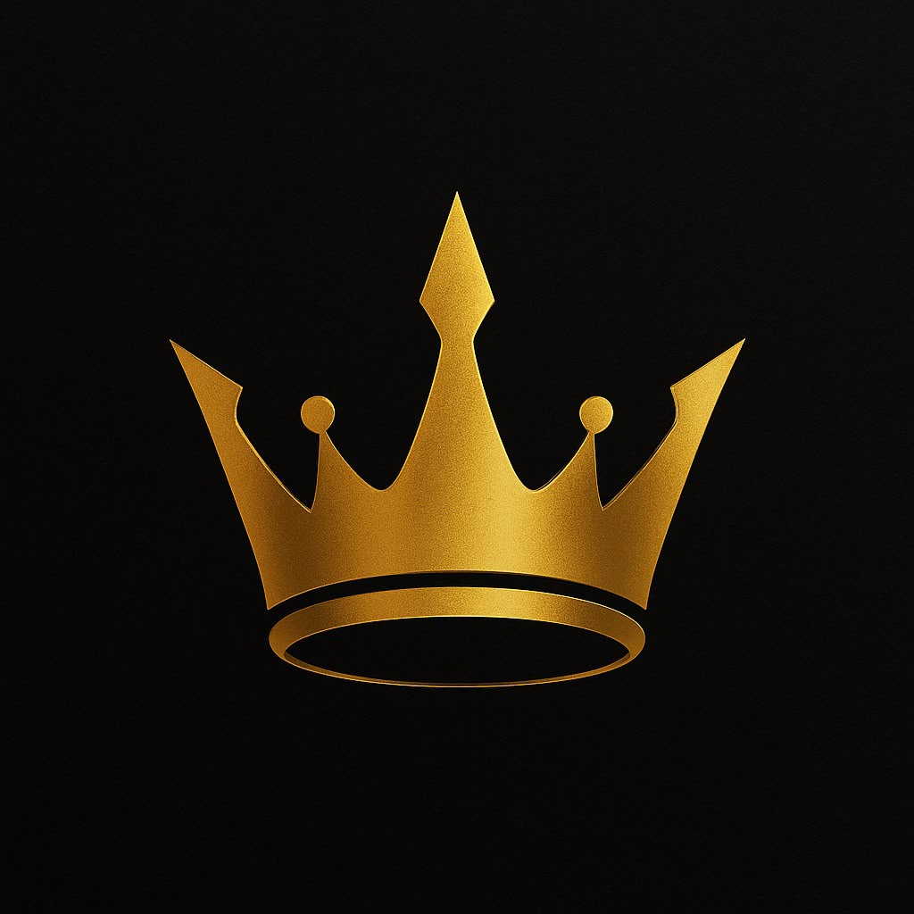
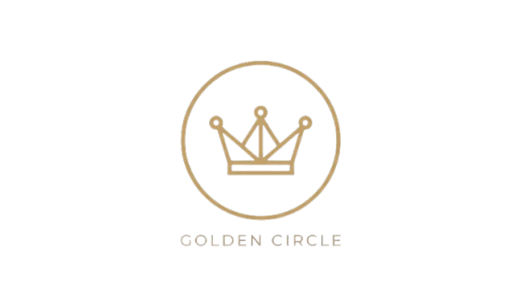

Mindset
Question your assumptions. See the situation clearly and focus on what you can influence especially your next decision.

THE GOLDEN CIRCLEPERSONAL OPERATING PHILOSOPHY 01
You do not need every answer. Build the mindset, discipline and skills to solve better problems then turn what you learn into something real.
THE IDEA 02
The Golden Circle is about becoming the person capable of building the life you want not by waiting for the perfect moment, but by improving how you think, act and create.
Trading, AI, digital products, client work and community are different applications of the same philosophy. Learn deliberately. Take responsibility for your decisions. Build systems that make good work repeatable. The industry can change. The standard stays.
Question your assumptions. See the situation clearly and focus on what you can influence especially your next decision.
Motivation comes and goes. Build habits, standards and systems that help you follow through when motivation is absent.
Build practical skills through study, repetition and feedback. Knowledge matters most when you can apply it to real problems.
Turn what you learn into useful work: tools, products, services and systems that solve real problems for other people.
Create more options and greater control over your time, work and direction. Freedom is built through capability and responsibility; it is not guaranteed, and it is never just a slogan.
THE ECOSYSTEM 03
These projects are different expressions of one standard: learn by doing, improve through feedback, and turn useful knowledge into systems other people can use.
Education, strategy and proprietary tools built from years of market work.
Practical prompts, workflows and creative systems that turn AI into leverage.
Useful assets and educational products designed to move ideas from screen to reality.
Premium AI-powered product creative for e-commerce brands that need better visual content.
SYSTEMS I BUILT 04
I build tools around process, risk and consistency because improvement becomes more deliberate when decisions and behavior can be measured.
Track trades, performance, discipline, emotions, drawdown and the patterns behind your results.
Calculate position size and risk for XAU/USD before the trade not after the mistake.
A simple system for tracking the process itself because outcomes are easier to improve when the behavior is visible.
THE SHOP 05
Education, digital assets and systems. No filler only things with a job to do.

THE COMMUNITY 06
More than 80 people are already part of the Discord community gaming, talking, competing and spending time together.
It started as a place to hang out. That matters too. A serious philosophy does not require a serious face all the time.
Enter the Discord ↗THE PERSON BEHIND IT 07
It is a record of learning, building, testing and improving in public.
I work across trading, AI, digital products and creative services. I build systems, test ideas, make mistakes and refine what works. I do not see these as separate identities, but as different ways to develop capability and create value.
I do not need to present a perfect result. I need to be honest about the process, take responsibility for my decisions and keep becoming more capable then build from there.
Follow the build on Instagram ↗THE GOLDEN CIRCLE 08
Mindset → Discipline → Skills → Creation → Freedom
Follow the journey ↗